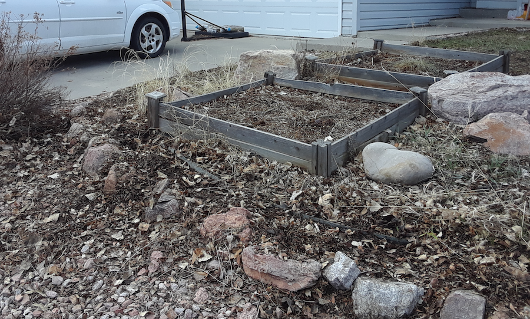
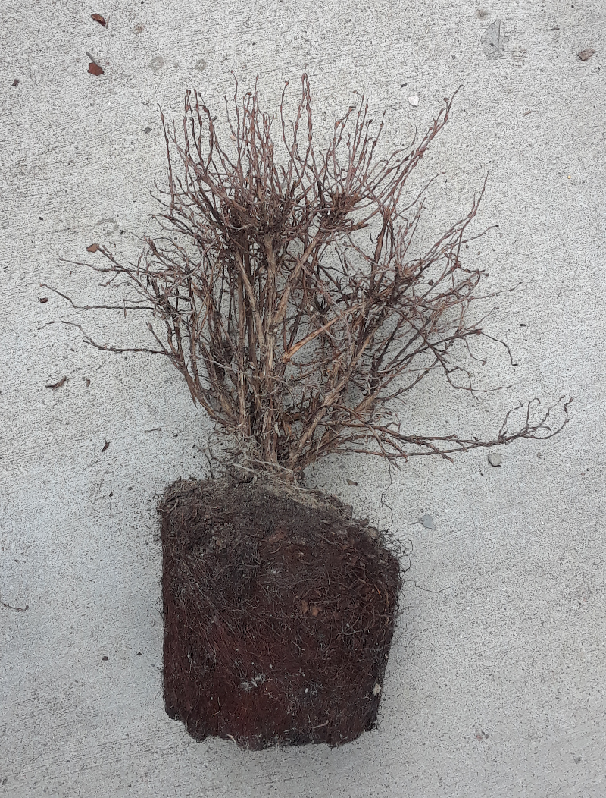
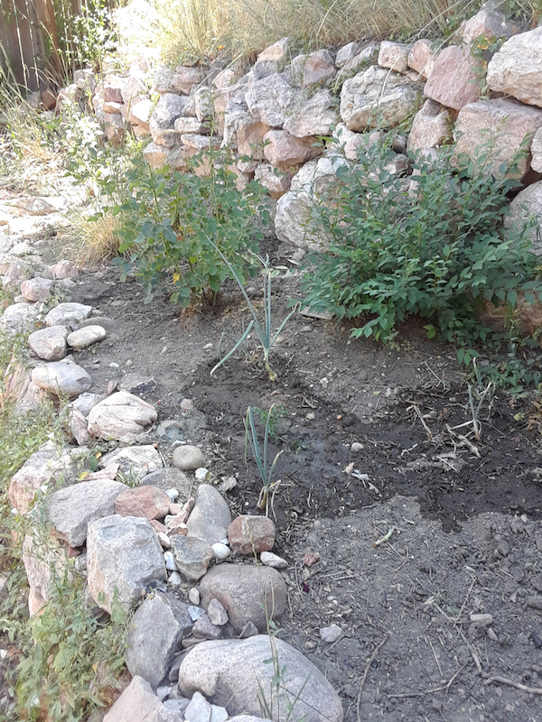

03-23-2020
Cleaning up Lavender Beds
This morning I worked in the front yard cleaning up the lavender beds by removing leaves and the old stems. Here is the yard before the clean-up (along with our black cat Rocky crossing in the background):
Removing the dead stems and leaves took some time and even then there still needs to be another round of leave clean-up as seen in this after photo:

03-16-2020
Seed Grow Station
After being inspired last Thursday , I started my indoors seed starting station and went ahead and created three of the egg carton seed packs. I also planted a micro-greens pot and in another pot planted one of the onion bulbs from last year. Some of the last year's seed pods were re-hydrated and planted some of the remaining beans and squash seeds.
In the photo below, the egg carton seed cartons in the black trey are from front to the back:
- The three sisters - corn, green beans, and zucchini
- Tomatoes from the super successful cherry tomato plant from last season and pumpkin seeds from last fall, and some beets seeds from Ann Grant Martin
- Arugula, Kale, and Spinach
The two brown bottles hold water and in the lower-left corner there is a couple of my paint brushes (my easel is adjunct to the grow station) are in jar with paint thinner. Because of the COVID-19 virus imposed social distancing, all of my family is staying at home. Being able to start on the cultivating seedlings for this season's garden provides a much needed balance and connection to the larger reality beyond the fear of the ongoing pandemic.
03-12-2020
Onions in Early March
Last fall I didn't harvest very many onions that were the Rose bed because most of them have died or so I assumed from the lack of green tips. Last week I noticed as the weather in Colorado Springs has improved, that some of those abandoned onions are sprouting back up with the most prominent pictured below:
Last weekend I put on my todo list to start the seedlings for planting this spring and I always seem to have an excuse. I need to get the light fixed and most of the first two trays planted, perferrable this afternoon. This year I am using cardboard egg cartons for containers to hold the seeds. The added advantage is that I can use a pen to mark what is where.
My immediate goal is the create a three-sisters planting on a single six-egg carton and then tranport them to the very successful cherry tomato planter from the last year. I am curious to see if the container is too constraining for the corn or if all three plants (the other two being beans and squash) can survive as a well.
It would be nice if I could cultivate the three-sisters in this manner.
02-13-2020
Re-potting the Lemon Tree
I think the size of the pot for my new lemon tree was too small and too much of the root crown was exposed. I had an extra plastic container that moved the lemon tree into that does a better job of covering the roots and gives the tree more room to grown. In the small window of sun shine during the 20 degree Fahrenheit day, I replanted and took this photo (I wish it was warm as it looks, the sun in Colorado is always deceptive during the winter)

The bottom of the lemon tree's container has a reservoir to store extra water so I hope that will help reduce the occurrence of all of the soil being dried up that was part of the issue with the smaller terracotta pot.
01-15-2020
California Dreaming
For my first blog post of 2020 (and it being winter here in Colorado Springs) I decided to replant a lemon tree I purchased late last year into it's own pot.
When I am in Palo Alto, my cube on the Lanthrop third floor looks into a courtyard that contains lemons and kumquats in planters. When I was there last week, the lemons were starting to ripen. These lemons are delicious and so inspired me to buy and try to keep living my lemon tree. I did notice that the pot I picked is about the same size and container I purchased with the roots being container bound. I'll likely need to purchase a larger pot this summer.
12-31-2019
Final Thoughts for 2019
As the last day of 2019, my garden adventures for the year are complete with very mixed results. I killed too many plants and here , I failed in both planting seedlings and from most of onions I planted int the ground. My notable successes were with container plants, both onions and the cherry tomato plant. I did a lot of weeding and bush removals along with other gardening work around the house. In all, even though most of my ambitions was folly, documenting my experiences in this blog and spending time gardening was a source of deep satisfaction and humbling of my initial hubris.
2020 New Year Garden Resolutions
Looking over the past year, here are my gardening goals for the new year:
- Start seedlings sooner, allow them to grow larger before planting in the ground and in containers
- More of mix between in-ground plantings and container gardening
- Plant less perennials
- Start a drip irrigation system for at one of the new beds
10-27-2019
Harvesting Container Onions
The weather forecast for Colorado Springs is snow for the next couple of days so I decided to harvest three of the onions in the long container before the snow starts coming down. I picked the three and noticed although the size of the onions where not great, the length of the roots was significant and think the long rectangular box was too shallow for the deep rooted onions for next season's garden. Here are the three onions freshly picked with the rich soil still attached:

After cleaning the onions, I decided to keep one of the larger onions with the most roots out to plant in my internal winter garden in a deeper pot but I chopped up the small onion and the other larger one in a pan with carrots that eventually became the base for the bean soup for Sunday's dinner:
This is after all the ultimate goal for my gardening efforts this year and for this blog was to at least to supplement the diet of myself and my family going into the winter.
10-09-2019
Growing season Wind Down
The latest weather forecast for Colorado Springs calls for snow and drastically reduced high temperature in 30s Fahrenheit. I decided to move the one remaining tomato plant indoors and see if I can keep the plant alive as long as possible in my portable grow station. This cherry tomato plant has been the most productive plant in this season's garden adventures and it will be an interesting experiment to see how long this plant lives indoors. I decided to hold off in harvesting the remaining onions in the rose bed and in the long container.
09-22-2019
Back from Sweden; Tomatoes and Garden Center
Last week I was in Stockholm at the National Library for a conference where I presented on two different panels related to my work as software engineer. Before I left, I thought I gave instructions for watering the cherry tomato plant that is now in the backyard. This morning I harvested three tomatoes and picked up about five or six ripe tomatoes from the ground that I've moved indoors. I am going to try to get them to grow over the winter or at least be able to harvest the seeds for next spring.
My favorite garden center sent me an email with a number of coupons that have induced me to go there after the Denver Broncos game (an expected loss to Green Bay given how they've been suffering from three turnovers and no sacks or takeaways). I purchased a stone pot to replant a Ficus house plant my brother gave my and wife last summer for our wedding. I like how it looks:
09-10-2019
Removing Cinquefoil Bushes and Digital Timer
A couple of days ago, after prompting from my wife, I went and finally removed the dried out Cinquefoil bushes we had planted earlier in the summer . I noticed the root ball of all but one bush were root bound and still in the same of the plastic pots they came in. My best guess is that we really need to water and continue to water any new bushes or other plants we attempt on the hill next year. Here is an example of the one of the smaller Cinquefoil bushes on the sidewalk:

In a less depressing topic, I found doing a web search the manual for the Workchoice WC2011 Digital Timer that I used last winter and spring to grow the three sister seedlings that never grew when I replanted them into the backyard onion and rose bed. Now that the weather is starting to get cooler, I want to start again and see if I can get a small indoor garden space going again for fall, winter, and next spring.
08-28-2019
Water and Tree Removal
I watered the front cherry tomato plant in the front year this afternoon.
Growing with the front bushes were two larger upshoots from tree stumps I had cut down in previous years.
Before
After
Of course, since I haven't dug up these small stumps, next year I'll likely have to trim the saplings again in this location.
08-26-2019
White-tail ( Odocoileus virgininus ) Life-cycle
This afternoon I took Foxy, our chow mix, for a walk down our street and a young fawn was spooked out of one of the Northeast neighbor's yard and stop to watch us. I took this photo of our encounter:
The fawn bounded off with Foxy and I continue walking down the street. We then broke off and followed a path through a still wild field where as looked at these flowering bushes and grasses, I thought of how it may look in my backyard hill after our disaster of planting this spring and summer. Here is the trail we were following:
As I was thinking about how with gardens we try to enforce our values, our vision, onto the land, these flowering plants reflect a baseline that I need to do a better job of observing and integrating into my labor in the yards of my house and community. I like that I don't have a back fence along my properties and the hill is wild with often visits from deer eating along the ridge.
Funny enough, when I got back home and went out back there was a magnificent buck resting at the top of my property line pictured in silhouette pictured here:
08-18-2019
Watering Onions and Roses
The past few days in Colorado Springs have been dry with hot days. Today I watered the onions in the backyard roses and onion bed:
 . I selectively watered the remaining onions using a plastic bucket. As I went back and forth filling the bucket with house water, I remembered reading the news reports about It is raining plastic about microplastics found in 90% of the samples of rain water in Denver and Boulder. I wonder how my practices in the garden, like using a plastic bucket for watering, are contributing to microplastic pollution in Colorado Springs?
08-10-2019
Onions and Roses, Purple Fungus, and Cherry Tomatoes
When I got home from Aikido practice, I started weeding the back,
in, what I got a little chuckle in the bad pun
Onions and Roses
rock band,
main growing bed in the back-yard. As I was removing the morning glories vines
from the bed as they crowd out the onions, in the photo below you can
the row of onions are next to stone wall on the right with the roses on
the left.
When I was removing these vines, I thought of my role in the garden as the fitness function of these adaptive systems of grow plants. My intention in removing unwanted plants is improve the environment for the plants that I want to thrive and succeed. But, I was looking at these particular morning glory vines and how resilient and tough these plants are, I wonder for the 2020 growing season that I plant and start early climbing peas in the same areas and try to grow them as a replacement in the niche currently being exploited to great effect by these climbing vines.
Purple Fungus
Since 2013, my first spring and summer in this house, I have notices this purple fungus on many of the weeds in both the front and back. On the south side of the house (what I'm now going to start call Strawberry Row, as the strawberry plants there are doing well) there was a particularly bad patch I took the following photo of one plant with leaves in various stages of infection:
I am not sure what this fungus does or is called but since it seems to only infect (so far as I can tell) common weeds that I would have normally picked anyways). I was able figure it out in 5 minutes of web research but I'll continue to look into this. In the meantime, when I pick these infected weeds I'm isolating them from my two compost bins and my plan is to burn them once they dry out.
Cherry Tomatoes
So my cherry tomato plant impulse buy started producing and ripening small tomatoes that I have started picking and eating once ripe! here is a close shot of a ripe tomato on that plant that I also took today:
08-04-2019
Removing Dead Bushes, Weeding, and Watering
For the past couple of weeks I've either been out-of-town (last week at this time I was finishing up a 5-day Aikido Summer Camp in the Rockies at Boulder Aikikai ) or haven't done much gardening other than weeding and watering the onion bed and the new tomato plant.
The four bushes my wife purchased earlier in the summer are all dried up and look died. I'm not sure if was the lack of watering initially or for some other reason, one problem with the bushes location on the backyard hill is that water retention isn't great. When I went up the hill today to look at the four bushes, I noticed green leaves sprouting on a couple of the branches in one of the bushes picture below.
The next time we plant a bush or tree on the hill we should look at using
drip irrigation to ensure a consistent supply of water. Disappointing
for sure.
07-16-2019
Onion Bed Weeding and new Cherry Tomato Container
During my lunch 1/2 hour today, I briefly went through and weeded the onion bed in the back yard. Most of the weeds are off-shoots of the climbing vine that has a mass of roots through-out the bed. I imagine as an underground network spreading out and finding its way for any opportunity to burst through a weak spot or sunny location in the onion bed to send up a quick growing shoot.
This weekend in a fit of consumer loss of will-power, I purchased a large cherry tomato plant within it's own container that I have put in the front sidewalk, pictured here:
07-02-2019
Red and Yellow Roses (on the same bush)
The second largest rose bush in the back garden recently bloomed. In the past and up until recently, all of the Roses in the back-yard were red.
A couple of days ago, a yellow rose appeared and here is photo of the usual red roses in the upper-left with the new yellow rose in the lower right.

06-28-2019
Back from Trip & Weeding
Late Wednesday night I flew back to Denver and then took the shuttle from DIA to the Antlers Hotel in Colorado Springs. Yesterday I spent the day mostly in bed recovering from a summer chest cold (still not 100%) but today I was able to do some weeding in the onion bed.
Feeling the warmth and brightness of the sun on my face, I hope when I'm recovering from a future illness I'll be able to garden a bit.
06-16-2019
Yew Bushes Trimming & Bees in the Lavender
This morning and afternoon started with picking weeds in
the both the backyard onion patch and in the lawn before I mowed.
I then shot the following video of bees and flies pollinating
the lavender bushes in the front:
Later in the afternoon, I went back to trimming a yew bushes in the front. Under the bushes is a rock border that I wanted to reveal that was over-grown. I cut them back as seen in this photo:
06-07-2019
Front-yard Flower Beds
Yesterday, my wife Melissa went to a large retail tool and garden center and purchased a number of flowers for the front-yard. The red geraniums and yellow lilies really stand-out surrounded by the lavender bushes.

05-19-2019
Third "Three" Sisters Planting
None of the initial "three" sisters planting of corn, eggplant, and green beans came up and since I have initial seedlings ready for planting, I decided to replant the available seedlings in the same location as the initial seedlings. I also and weeded the front-yard and along the side of the house leading up to the second strawberry patch .
05-14-2019
Strawberry Patch Two
Sunday I arrived back from a professional conference in Boston and yesterday as I was looking at the first Strawberry patch on the enclosed side of the house, I noticed a ripe strawberry that I picked and enjoyed just a taste of the hopefully, more to come in the upcoming years. On the opposite side of the house is a second patch strawberry patch on side of the hill pictured below:

05-03-2019
Second Sisters Planting
The weather this past week in Colorado Springs ranged from snow to rain until today with the sun provided an opportunity to go outside and engage the garden.
Earlier in the spring I started a seed starter grow station in my garage that provide the source seeds in my first foray into a three sister's planting. Starting withe the seedlings with the most growth pictured here:

A closer grouping of the seedlings to plant:

Here are the seedlings near the final position in the garden patch before being planted this afternoon:

Here is the final planting using soil from the existing compost augmented with some dirt from a purchased bag of garden soil:

04-28-2019
New Compost Bag, Onion and Roses Bed
Yesterday I went to my new favorite garden-center and purchased a " compost sak " for the front yard. This morning I set-up the sack and placed next to the gate to the backyard (see the photo below) I picked up the remaining cuttings from my trimming the yew bushes in the front as well as a round of weeding the front yard.

Later in the afternoon, I weeded and watered the onion and rose bed which you see in the second photo below. Also, you can start to get a sense of the hill in the backyard as well.

I should confess that an important source of inspiration is watching through Monty Don series on Netflix, with my wife and I watching the second episode in the French gardens series. Today I first heard the French style of kitchen garden, or portage, from the French word for soup, were herbs, fruits, vegetables, and flowers are all combined into an integrated whole with the focus on the vegetables. Just a quick internet search turned up two articles, Learn to How to Create a Potager: A French Kitchen Garden and How to Design a Potager Garden .
04-23-2019
Weeding Dandelions
The rain of the past two days in Colorado Springs resulted in a
number of dandelions popping up in the front-yard. Between meetings
this afternoon, I picked a few and then took the first photo
of my weeding tools and bucket, along with the largest patch of these
"weeds". Most weeds I don't have any qualms about removing them from the
front lawn or in the various garden beds but I am ambivalent about dandelions
because, unlike many of the weeds, they are edible and I feel like instead of
composting them, I should clean and prep them for a meal.

I also came across this multi-colored, that I believe is a
pansy that grew from seed as a part of last year's pansies in the front-yard beds.

04-21-2019
Berry Hedge Beginnings
My stepdaughter Meghan and I planted a few weeks three berry bushes, a red raspberry, a black raspberry, and a blackberry bushes at the top of my Pike Peak's foothill backyard. As seen in the photo below, I labeled each of the new bushes with an unique IRI built using the EFF's dice word-list to generate random three-word phrases as names instead of me trying to come up with new names and ids for the plants I want to track.

04-20-2019
Initial Garden Reflections
Starting today, I write to reflect on today's work in my garden, located on the Westside of Colorado Springs. Most of my backyard is the side of a foothill that with it's siblings, merges west into Pikes Peak.
My current work is in a rose garden that over the past years I've lived here, I've routated between the roses, loosely-called compost pits. Finally this year, I'm actually planting both onions and three sisters of first nation origin.